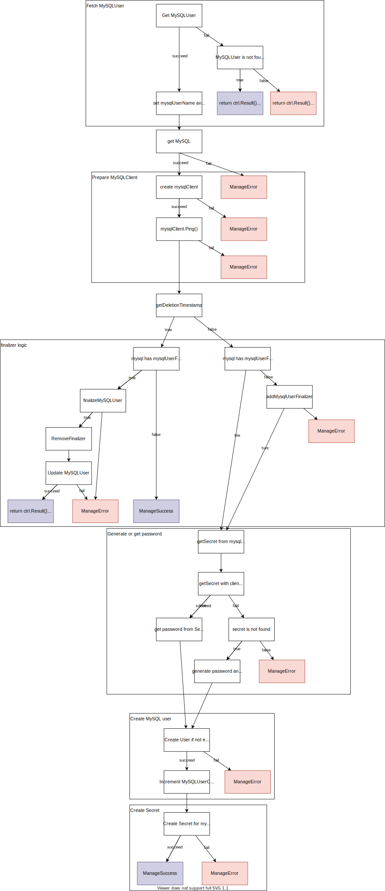

Reconciliation Loop (Old)

1. Update subresource status.conditions (with operator-utils)
Use https://github.com/redhat-cop/operator-utils
Usage:
-
Update Reconciler with:
import "github.com/redhat-cop/operator-utils/pkg/util" ... type MyReconciler struct { util.ReconcilerBase Log logr.Logger ... other optional fields ... } -
Update CRD:
// +patchMergeKey=type // +patchStrategy=merge // +listType=map // +listMapKey=type Conditions []metav1.Condition `json:"conditions,omitempty" patchStrategy:"merge" patchMergeKey:"type"` } func (m *MyCRD) GetConditions() []metav1.Condition { return m.Status.Conditions } func (m *MyCRD) SetConditions(conditions []metav1.Condition) { m.Status.Conditions = conditions } -
Replace
return ctrl.Result{}, errwith:return r.ManageError(ctx, instance, err) -
Replace
return ctrl.Result{}, nilwith:1. Object will have conditions:return r.ManageSuccess(ctx, instance)kubectl get mysqluser -o yamlstatus: conditions: - lastTransitionTime: "2021-12-28T12:26:21Z" message: "" observedGeneration: 1 reason: LastReconcileCycleSucceded status: "True" type: ReconcileSuccess
2. Update subresource status
-
Set mysqluser instance.
1. Save the instance.mysqlUser.Status.Phase = "NotReady" mysqlUser.Status.Reason = msgerr := r.Status.Update(ctx, mysqlUser)
When updating the status subresource from the client, the StatusWriter must be used. The status subresource is retrieved with Status() and updated with Update() or patched with Patch().
3. Display field in the result of kubectl get (additionalPrinterColumns)
If you don't want to kubebuilder marker, you can write CRD by yourself.
- Add a column to Status.
type MySQLStatus struct { // INSERT ADDITIONAL STATUS FIELD - define observed state of cluster // Important: Run "make" to regenerate code after modifying this file + + //+kubebuilder:default=0 + UserCount int32 `json:"userCount"` } - Add kubebuilder marker.
//+kubebuilder:object:root=true //+kubebuilder:subresource:status +//+kubebuilder:printcolumn:name="UserCount",type="integer",JSONPath=".status.userCount",description="The number of MySQLUsers that belongs to the MySQL" // MySQL is the Schema for the mysqls API type MySQL struct { -
Run
make manifests.singular: mysql scope: Namespaced versions: - - name: v1alpha1 + - additionalPrinterColumns: + - description: The number of MySQLUsers that belongs to the MySQL + jsonPath: .status.userCount + name: UserCount + type: integer + name: v1alpha1 schema: openAPIV3Schema: description: MySQL is the Schema for the mysqls API @@ -52,6 +57,13 @@ spec: type: object status: description: MySQLStatus defines the observed state of MySQL + properties: + userCount: + default: 0 + format: int32 + type: integer + required: + - userCount type: object type: object served: true -
kubectl getkubectl get mysql NAME USERCOUNT mysql-sample
4. Add OwnerReference or SetControllerReference between CustomResources
-
Add
SetControllerReferencefor MySQLcontrollerutil.SetControllerReference(mysql, mysqlUser, r.Scheme) err := r.GetClient().Update(ctx, mysqlUser) if err != nil { return r.ManageError(ctx, mysqlUser, err) // requeue } -
Get in yaml format.
kubectl get mysqluser nakamasato -o yaml ... metadata: ... ownerReferences: - apiVersion: mysql.nakamasato.com/v1alpha1 blockOwnerDeletion: true controller: true kind: MySQL name: mysql-sample uid: 0689bf66-86a3-40a5-8e50-5e91533a8dc8 resourceVersion: "928" uid: 09c69b78-79c5-4af8-9f84-7eb5dba52371 ... -
SetControllerReference: Use this when you want to reconcile the owner object on changes to controlled one. > SetControllerReference sets owner as a Controller OwnerReference on controlled. This is used for garbage collection of the controlled object and for reconciling the owner object on changes to controlled (with a Watch + EnqueueRequestForOwner).
Usually use with the following line in
SetupWithManager:- SetOwnerReference: Use this when you just want garbage collection.Owns(&mysqlv1alpha1.MySQLUser{}).SetOwnerReference is a helper method to make sure the given object contains an object reference to the object provided. This allows you to declare that owner has a dependency on the object without specifying it as a controller.
5. Finalizer (Handle Cleanup on Deletion of external resource)
Finalizer is set to wait until dependents are deleted before deleting the object.
- When a new object is created, add the finalizer.
- When an object is deleted,
DeletionTimestampwill be set. - Execute the finalizer logic if the finalizer exists.
-
Remove the finalizer.
Once the list of finalizers is empty, meaning all finalizers have been executed, the resource is deleted by Kubernetes.
-
https://kubernetes.io/blog/2021/05/14/using-finalizers-to-control-deletion/
- https://kubernetes.io/docs/tasks/extend-kubernetes/custom-resources/custom-resource-definitions/#advanced-topics
- https://book.kubebuilder.io/reference/using-finalizers.html
- https://sdk.operatorframework.io/docs/building-operators/golang/advanced-topics/#handle-cleanup-on-deletion